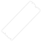
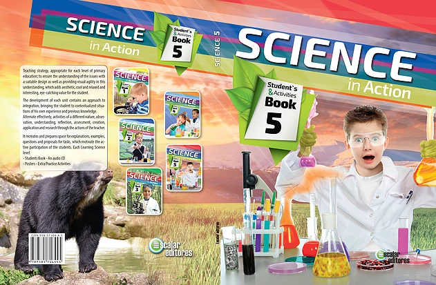
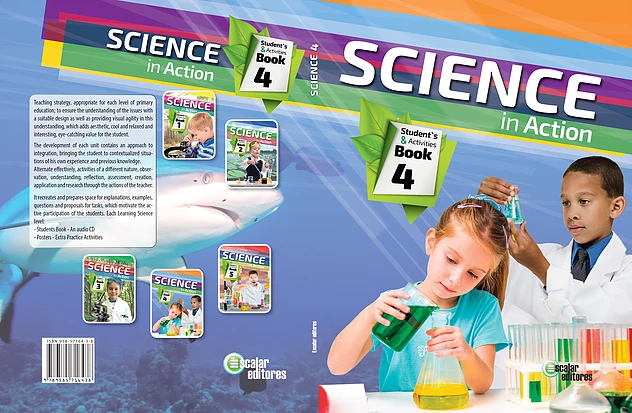
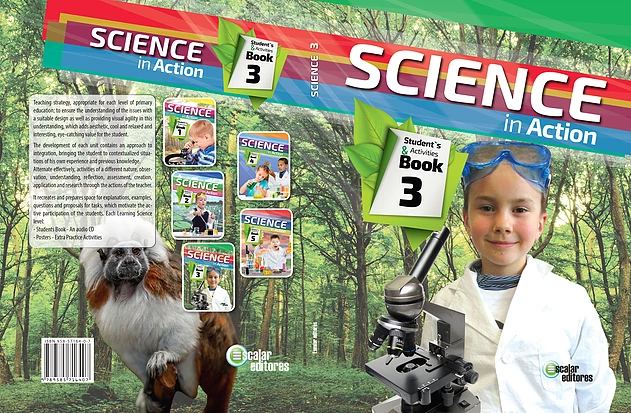

Learning Science and Social Studies

Es una Propuesta Pedagógica para Enseñanza de Ciencias Dirigido a escolares de nivel Básico Primario de Educación bilingüe.



Nombre de la unidad.
Prueba inicial o conocimientos
previos.
Desarrollo temático actividades
de refuerzo.
Conceptualización y evaluación de
la unidad.
Laboratorio.
Bibliografía.
Nombre de la unidad.
Prueba de conocimientos previos.
Desarrollo temático.
Actividades.
Laboratorio.
Ciencia y tecnología.
Evaluación de la unidad.
Glosario.
Bibliografía.
Estructura del Texto
1° y 2° Grado
previos.
de refuerzo.
la unidad.
3° a 5° Grado
- 
- 
- 


Presentación de la Serie
Material
1° Grado 112
2° Grado 128
3° a 5° Grado 160